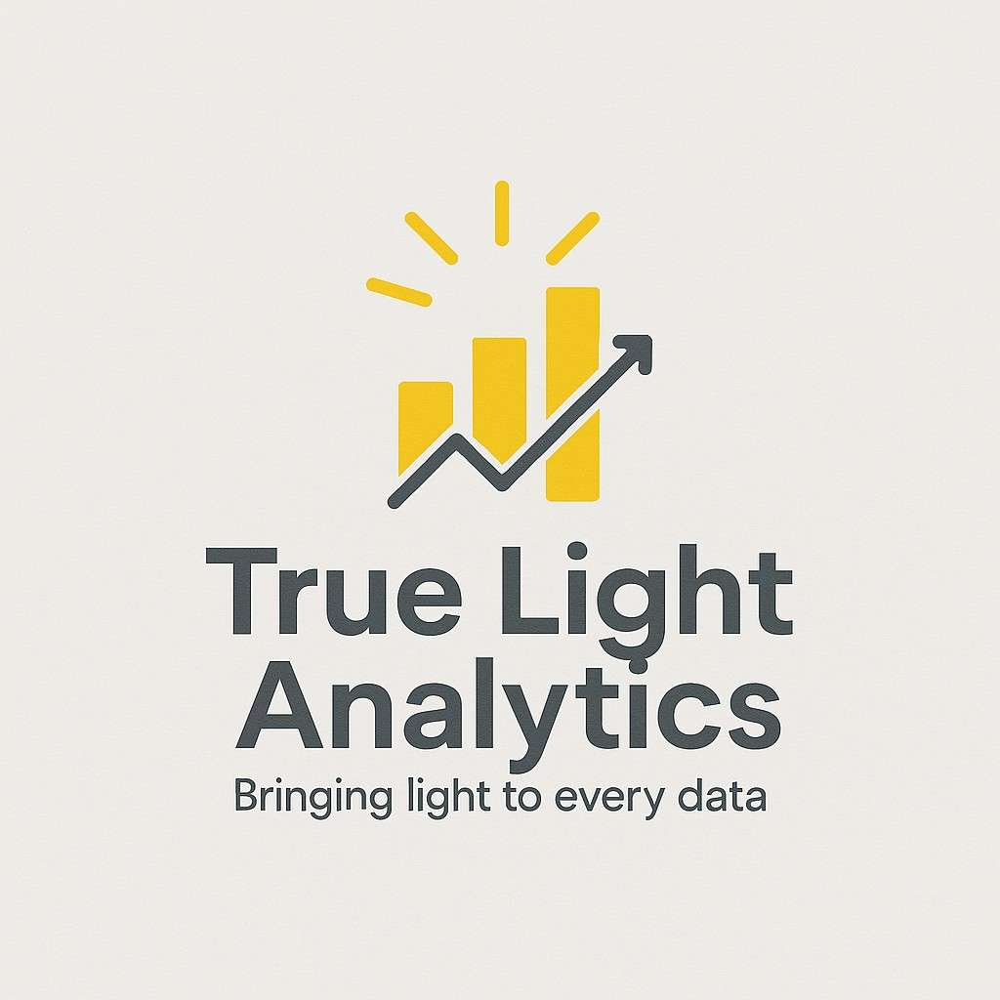

Discover Our Area
About Lagos
Lagos is Nigeria’s economic hub and a vibrant metropolis. From its bustling tech markets to tranquil beaches and conservation centers, it offers a diverse experience for businesses and visitors.

Goodluck AberareLagos is Nigeria’s economic hub and a vibrant metropolis. From its bustling tech markets to tranquil beaches and conservation centers, it offers a diverse experience for businesses and visitors.